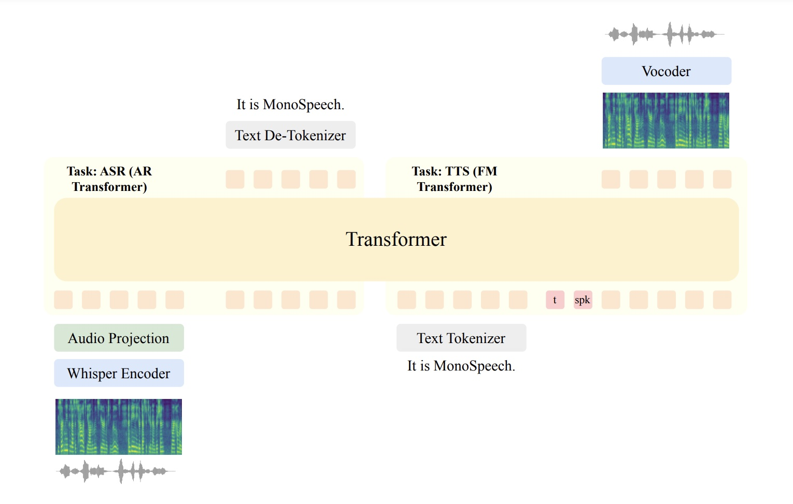

MonoSpeech: Unified Speech Recognition and Synthesis using Transformer with Both Autoregression and Flow Matching
Abstract. Most existing speech recognition and generation tasks often use separate models for autoregressive discrete text generation and diffusion or flow matching based speech generation. Alternatively, by discretizing speech data using speech tokenizers, it is possible to directly utilize autoregressive transformer to simultaneously model the generation of text and speech tokens for speech recognition and generatin tasks. However, speech discretization will result in speech information loss and may not achieve optimal results in modeling recognition and generation tasks. In this paper, we propose MonoSpeech, to unify autoregressive modeling based speech recognition and flow matching based speech synthesis into one transformer model, so that one model can simultaneously recognize and generate speech. This paves the way for unified multimodal understanding and generation in the field of audio. The experimental results show that our method can achieve or exceed current single-task modeling methods in both automatic speech recognition and zero-shot speech generation tasks.
